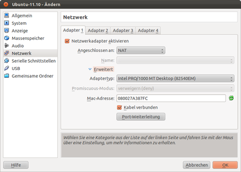

Netzwerk
Dieser Artikel wurde für die folgenden Ubuntu-Versionen getestet:
Ubuntu 16.04 Xenial Xerus
Ubuntu 14.04 Trusty Tahr
Zum Verständnis dieses Artikels sind folgende Seiten hilfreich:
Dieser Artikel erklärt die verschiedenen Möglichkeiten, wie das Gastsystem von VirtualBox in ein Netzwerk eingebunden werden kann. Nach dem Zweck der virtuellen Maschine gestaltet sich auch die Konfiguration des Netzwerks.
NAT¶
 Möchte man in einer virtuellen Maschine lediglich den Internet-Zugang des Hosts nutzen, um beispielsweise Websites oder eMail abzurufen, ist die Voreinstellung (siehe Bild) ausreichend:
"Netzwerk-Adapter" aktivieren (Kreuz setzen)
Angeschlossen an "NAT"
"Kabel verbunden" aktivieren (Kreuz setzen)
Muss das Gastsystem aus bestimmtem Grund von außen erreichbar sein, bedarf es etwas mehr Aufwand. Um einen Server innerhalb einer VM zu betreiben, können der Netzwerkmodus "Netzwerkbrücke" oder der Netzwerkmodus "NAT" unter Verwendung der Portweiterleitung genutzt werden. Möchte man vom Host- auf das Gastsystem zugreifen, zum Beispiel um einen Webserver in der VM zu testen, sollte der Host-Only-Modus verwendet werden. Wird aus der VM heraus trotzdem auch Internet-Zugang benötigt, können auch mehrere Interfaces anlegt werden, beispielsweise eines im NAT-Modus für den Internet-Zugriff und eines im Host-Only-Modus. So können Host und Guest miteinander kommunizieren.
Port-Weiterleitung¶
Sollen nur einzelne Ports der virtuellen Maschine angesprochen werden können, kann eine direkte Port-Weiterleitung vom Host zur VM eingerichtet werden. So lässt sich beispielsweise auf der virtuellen Maschine ein Webserver auf Port 80 betreiben, der über den Port 8080 des Hosts ansprechbar ist. Dazu richtet sich VirtualBox selbst als Server auf dem Hostrechner ein. Es belauscht den gewünschten Port und leitet den Netzwerkverkehr zu einem Port des Gastes weiter. Dabei kann natürlich jeder Port nur einmal verwendet werden. Auch kann nicht gleichzeitig ein anderes Programm auf dem Host den gleichen Port bedienen.
Einrichtung¶
Die Port-Weiterleitung ist nur im Modus "NAT" sinnvoll. Wählt man hier in den erweiterten Einstellungen "Port-Weiterleitung", kann man eine neue Regel hinzufügen. Hierbei ist "Host-Port" der Port, auf dem der Host ansprechbar ist (z.B. 8080), und "Gast-Port" der Port auf der virtuellen Maschine, auf dem der Server läuft (z.B. 80). Die IP-Adressen können, wenn nicht anders gewünscht, leer gelassen werden.
Aufruf am Host¶
Beim Beispiel des Webservers ist im Browser des Host-Systems der URL wie folgt aufzurufen:
http://localhost:8080/
Andere Netzwerk-Modi¶
Netzwerkbrücke¶
Wird die Netzwerkschnittstelle einer VM in diesem Modus betrieben, so kann die VM wie jeder reale PC in ein bestehendes Netzwerk integriert werden. Man muss dazu das Netzwerk-Interface des Hostsystems auswählen, über das man mit dem lokalen Netz verbunden werden möchte.
Internes Netzwerk¶
In diesem Modus wird ein Netzwerk zwischen den verschiedenen virtuellen Maschinen auf dem Host erstellt. Andere virtuelle Maschinen im gleichen internen Netzwerk ("Name") können auf diese Maschine zugreifen, nicht aber der Host oder Computer von außerhalb.
Host-only¶
Die Host-only Variante ermöglicht es, vom Guest-System auf das Host-System zuzugreifen und umgekehrt. Dazu wird ein virtuelles Netzwerk-Interface, zum Beispiel vboxnet0 angelegt. Über dieses Interface können Host- und Gastbetriebssystem miteinander kommunizieren.
Links¶
Links¶
VirtualBox
 Hauptartikel
HauptartikelVirtualBox/Installation - Installation und die nötigen Schritte zur Nachbearbeitung
VirtualBox/Benutzung - erklärt die Bedienung und die verschiedenen Einstellungsmöglichkeiten von VirtualBox
VirtualBox/Problembehebung - Probleme, für die bereits eine Lösung gefunden wurde, sind in diesem Artikel aufgeführt


- Erstellt mit Inyoka
-
 2004 – 2017 ubuntuusers.de • Einige Rechte vorbehalten
2004 – 2017 ubuntuusers.de • Einige Rechte vorbehalten
Lizenz • Kontakt • Datenschutz • Impressum • Serverstatus -
Serverhousing gespendet von